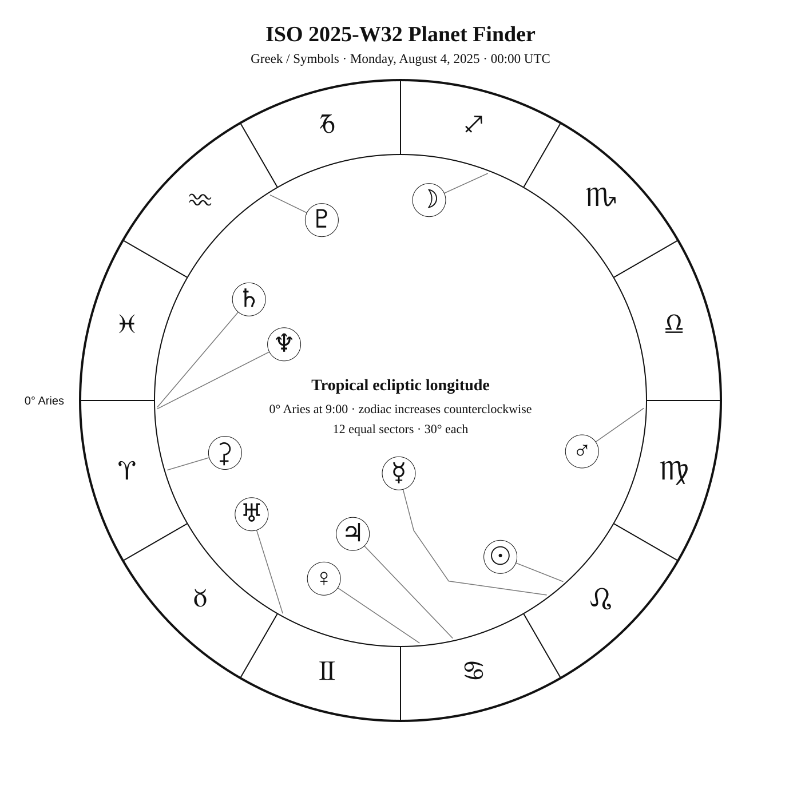
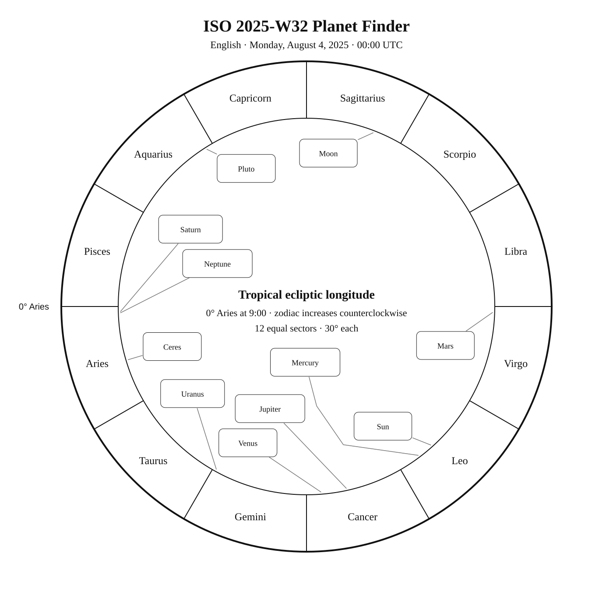
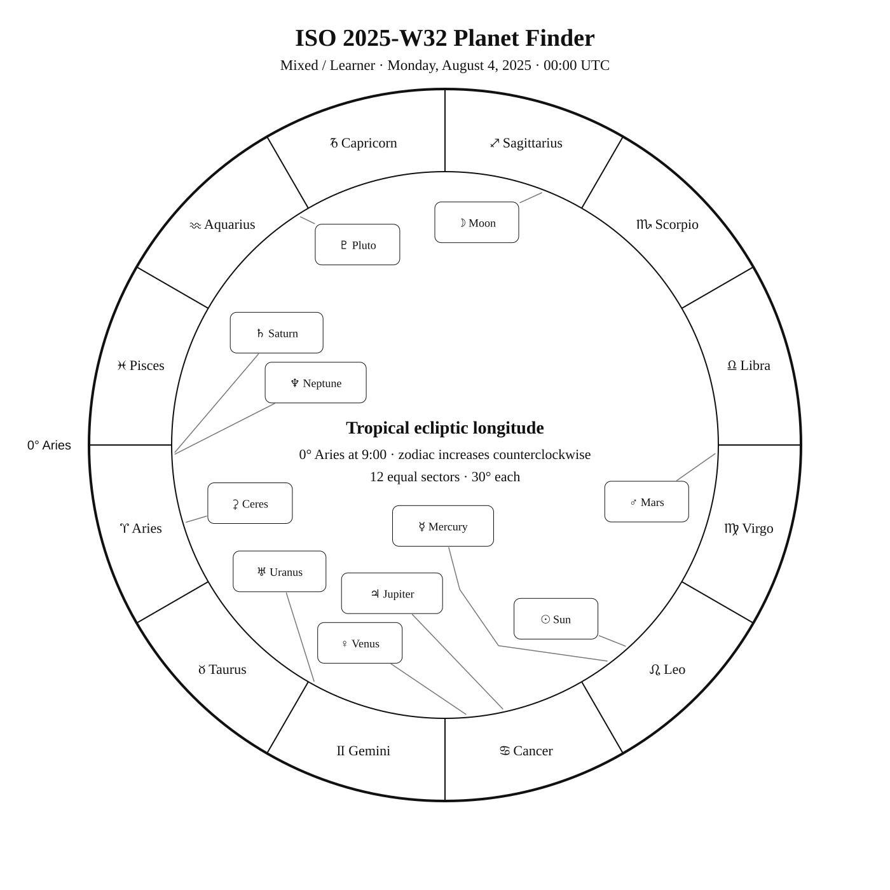

ISO 2025-W32
Week begins: Monday, August 4, 2025
Notation:
Calendar
| Date | Zodiac day | Events |
|---|---|---|
| Mon, Aug 4, 2025 | ♌ 14 | Eltanin (γ Dra) —  2 2.2 — Northern Summer 2 2.2 — Northern SummerM23 —  7 6.9 — Tropical Summer 7 6.9 — Tropical SummerBarnard's Star — — Tropical SummerFinest NGC 89 / NGC 6543 · Cat's Eye Nebula / C6 / NGC 6543 · Cat's Eye Nebula — 8 8.3 — Arctic Summer |
| Tue, Aug 5, 2025 | ♌ 15 | M20 — 9 9.0 — Tropical Summer |
| Wed, Aug 6, 2025 | ♌ 16 | Finest NGC 103 / NGC 6520 · Collinder 361 — 8 7.6 — Southern SummerM8 — 6 6.0 — Southern SummerM21 — 7 6.5 — Tropical Summer |
| Thu, Aug 7, 2025 | ♌ 17 | Lughnasadh · Summer–Autumn midpoint — 05:51:35 UTC C78 / NGC 6541 — 7 6.6 — Southern Summer |
| Fri, Aug 8, 2025 | ♌ 18 | Finest NGC 92 / NGC 6572 · Blue Racquetball — 8 8.0 — Tropical Summer |
| Sat, Aug 9, 2025 | ♌ 19 | 🌕 Full Moon · Grain Moon — 07:55:04 UTC M24 — 5 4.6 — Tropical Summer |
| Sun, Aug 10, 2025 | ♌ 20 | M16 — 6 6.4 — Tropical SummerM18 — 8 7.5 — Tropical SummerM17 — 7 7.0 — Tropical Summer |
Weekly Solar-System Ephemeris
Snapshot: Week begins August 4, 2025, 00:00 UTC.
(-90° to +90°; defaults +45°, 21:00 LAT)
Notation:
| Body | ☉︎ | ☽︎ | ☿︎ | ♀︎ | ♂︎ | ♃︎ | ♄︎ |
|---|---|---|---|---|---|---|---|
| Ecliptic | ♌︎ 11°54′ β −0°00′ | ♐︎ 9°01′ β −5°06′ | ♌︎ 6°53′ β −4°41′ | ♋︎ 4°27′ β −1°22′ | ♍︎ 28°09′ β +0°35′ | ♋︎ 12°21′ β −0°05′ | ♈︎ 1°32′ β −2°23′ |
| Observing |  | -10.9 | ☉︎ | -4.0 | 1.6 | -1.9 | 0.8 |
| Rise | 04:42 | 15:25 | 04:33 | 01:42 | 08:48 | 02:13 | 21:16 |
| Set | 19:18 | 23:31 | 18:37 | 17:01 | 21:06 | 17:40 | 09:08 |
Extended targets:
| Body | ⚳︎ | ♅︎ | ♆︎ | ♇︎ |
|---|---|---|---|---|
| Ecliptic | ♈︎ 16°37′ β −13°02′ | ♊︎ 1°00′ β −0°13′ | ♈︎ 1°56′ β −1°21′ | ♒︎ 2°22′ β −3°46′ |
| Observing | 8.6 |  5.8 5.8 | 7.7 | 14.4 |
| Rise | 22:43 | 23:29 | 21:11 | 19:03 |
| Set | 10:04 | 14:28 | 09:13 | 03:46 |
β = ecliptic latitude (+ north, − south).
Rise and set are Local Apparent Time for the selected latitude.
Naked-eye observing uses the Sun’s altitude at the selected Monday observer time: Daylight (Sun ≥ −0.833°), Civil twilight (−0.833° to −6°), Nautical twilight (−6° to −12°), Astronomical twilight (−12° to −18°), and Night (below −18°).
Solar Glare identifies a body too close to the Sun when the sky-state rule does not already supersede its naked-eye classification.
The Sun’s observing status uses this same five-state sky classification.
Notation:
Planet Finder



Sky Notes
Sky notes pending.